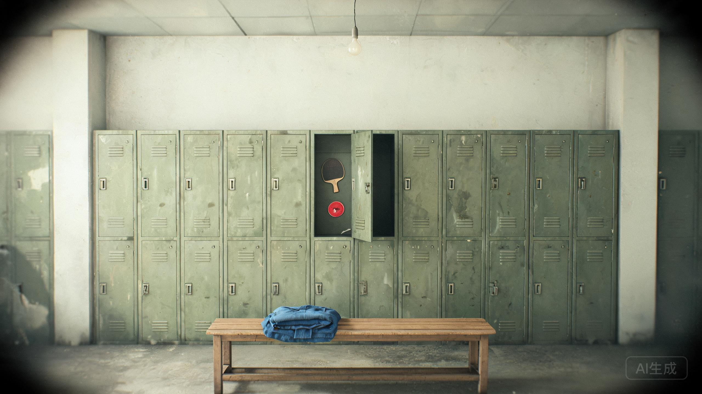

第四制药厂 · 男更衣室 · 西墙倒数第二格
柜门贴着一张球拍贴纸。四位密码锁还在。

按老赵的说法，这个柜子的密码“从来只用工号的后四位”。
一件蓝色工作服，洗得发白。左胸口袋上别着厂徽，编号 04071。口袋里有一张 1987 年的《临床观察告知书》，纸已经发黄。
告知书上写着：第四制药厂“安宁”营养剂临床观察小组，1987—1998，入组职工 17 人。组长签名：郑国华。
工作服下面压着一只乒乓球拍。拍柄被汗水浸成了深褐色，上面刻着四个数字：10·07。
厂徽背面用针划了一行字：04071 / 陈卫东 / 仓库。
“仓库”两个字的下面，又用更细的针尖补了三个字：第三排。
“10·07”不是日期，是小默第一次拿市里亚军的那个下午。父亲把球拍借给儿子，自己在球室外面站了一小时，没有进去。
拍柄底部还刻了一个更小的数字：3-3。第三排，第三层。
柜子最里面贴着半张合影。照片从中间被撕开，只剩父亲和母亲。父亲的脸被人用圆珠笔划掉了。